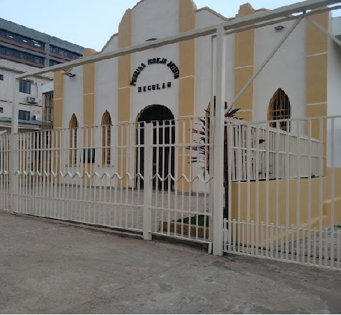
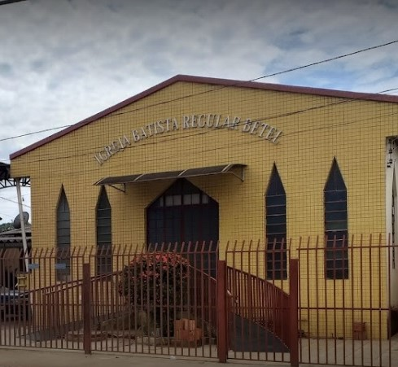

Como começou?
No mês de feverio de 1994, um trabalho de evangelização na cidade de Rio Branco, Acre. Dirigida pela Primeira Igreja Batista Regular de Rio Branco, PIBR guiado pelo pastor na respectiva época, Pr. José Duarte, junto com a sua diretoria, compostas por diáconos, secretários, tesoureiros, e por decisão únanime, mediante à asssembléia geral, foi decido a realização do trabalho.
Então na Avenida Epaminondas Jácome, no bairro da Cadeia Velha, nesta mesma cidade, foi iniciado o projeto da congregação. Após a aquisição do terreno, iniciaram-se os trabalhos de construção do templo, com a ajuda de irmãos, tanto financeiramente, tanto fisicamente, que mediante a palavra de Deus, seus nomes estão escrito no livro da vida. O nome da amada igreja, foi escolhido com muita sabedoria, não só por tratar de uma obra do Senhor, pois a sua palavra diz que:"Assim, pois, cada um de nós dará contas de si mesmo a Deus" Rm 14:12. Porém, bem mais que isso, um sentido sentimental, já que era a primeira congregação, que estava sendo instituida pela Primeira Igreja, e o nome, tinha que ser bem significativo, então a escolha foi por BETEL, que em sua tradução do habraico tem como: "Casa de Deus".
A Betel, tem como fundamento de sua estrutura base, a palavra de Deus, e reconhece como seu único cabeça e suprema autoridade somente o Senhor Jesus Cristo, para o seu governo em matéria de fé, culto, disciplina e conduta. Adotado a sua declaração doutrina e fé, no qual é a mesma da Associação das Igrejas Batistas Regulares do Brasil. Venha nos fazer uma visita, estão de braços abertos para vos receber.